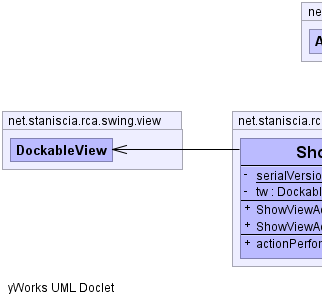
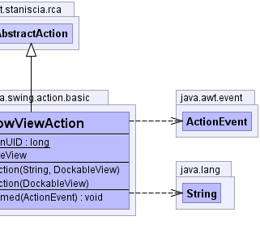

public class ShowViewAction extends AbstractAction
|  |  |
| Modifier and Type | Field and Description |
|---|---|
private static long |
serialVersionUID
The Constant serialVersionUID.
|
private DockableView |
tw
The tw.
|
DEFAULT_LABEL_GROUPchangeSupport, enabledACCELERATOR_KEY, ACTION_COMMAND_KEY, DEFAULT, DISPLAYED_MNEMONIC_INDEX_KEY, LARGE_ICON_KEY, LONG_DESCRIPTION, MNEMONIC_KEY, NAME, SELECTED_KEY, SHORT_DESCRIPTION, SMALL_ICON| Constructor and Description |
|---|
ShowViewAction(DockableView tw)
Instantiates a new show view action.
|
ShowViewAction(String group,
DockableView tw)
Instantiates a new show view action.
|
| Modifier and Type | Method and Description |
|---|---|
void |
actionPerformed(ActionEvent e) |
getBarGroup, getId, getMenuGroup, getShortcutKey, isBarItem, isMenuItem, setBarGroup, setBarItem, setIcon, setMenuGroup, setMenuItem, setName, setShortcutKeyaddPropertyChangeListener, clone, firePropertyChange, getKeys, getPropertyChangeListeners, getValue, isEnabled, putValue, removePropertyChangeListener, setEnabledprivate static final long serialVersionUID
private DockableView tw
public ShowViewAction(String group, DockableView tw)
group - the grouptw - the twpublic ShowViewAction(DockableView tw)
tw - the twpublic void actionPerformed(ActionEvent e)
Copyright © 2014 www.staniscia.net. All Rights Reserved.